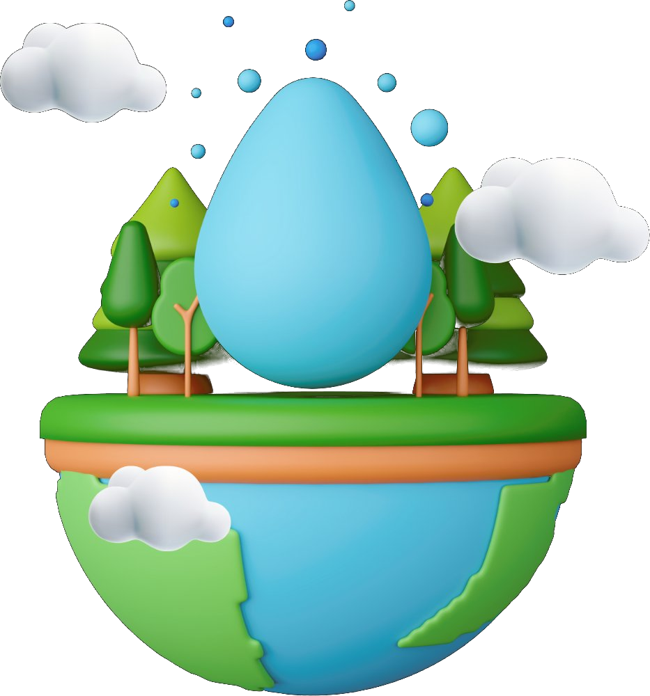
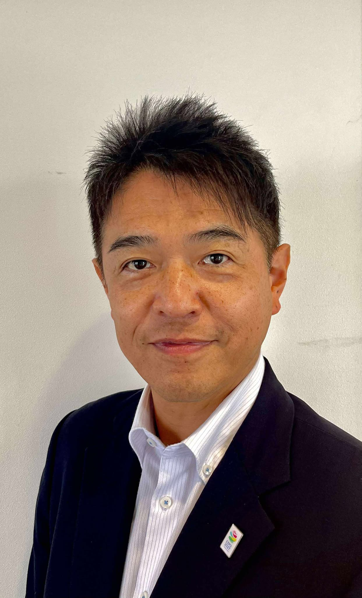
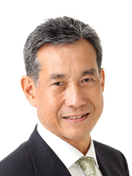
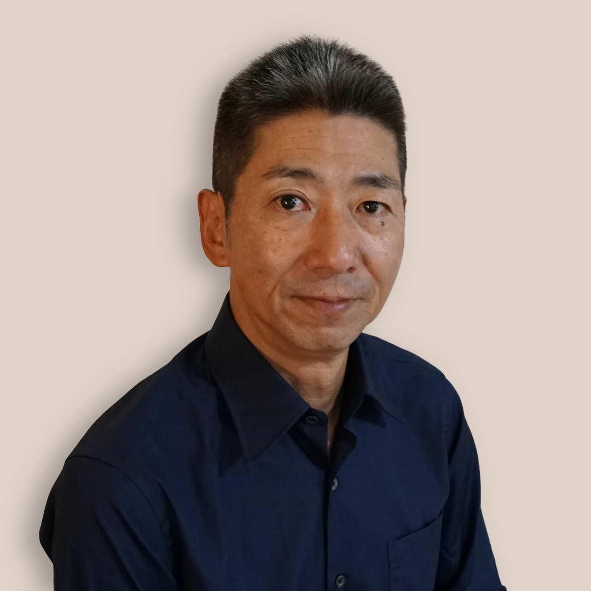
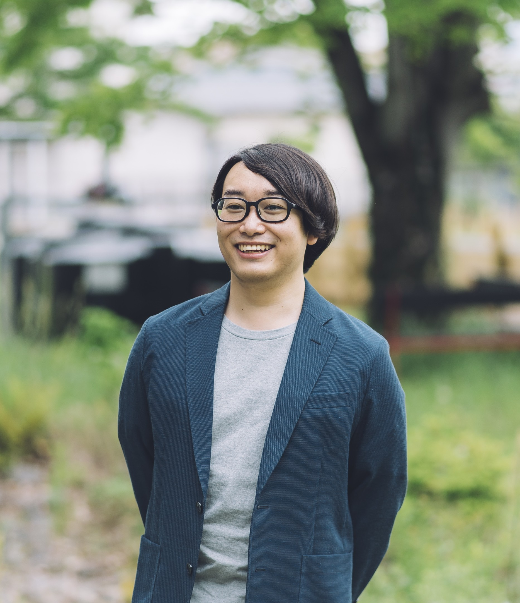
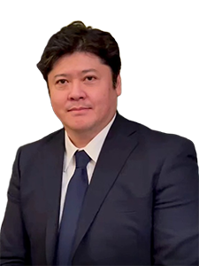

知
地域の水循環を知る
地下水・湧水・雨量・河川を継続的に測り、見えにくい水の動きを科学的なデータとして蓄積します。

水循環シンポジウム水循環シンポジウム 2026
2026 in 留寿都
水を知り、森を育て、地域で守る。
調査・観測・研究・地域実践をひとつにつなぎ、留寿都から羊蹄山麓、尻別川流域へ。健全な水循環と持続可能な地域の未来を、ともに考えます。
開催趣旨
水は行政区や事業領域を越えて流れます。本シンポジウムは、留寿都で進む調査と実践を共有し、産・学・官・民が同じ流域の未来を考える場です。
地下水・湧水・雨量・河川を継続的に測り、見えにくい水の動きを科学的なデータとして蓄積します。
森林の保水機能や自然共生型の整備手法を学び、地域の自然資本を守る実践につなげます。
企業、自治体、研究者、住民が知見を持ち寄り、次年度以降の調査・教育・地域連携を形にします。
2026年の取組
現地調査から観測基盤づくり、大学との研究連携まで。シンポジウムでは、積み重ねてきた実践と次の課題を共有します。
観測機器の復旧、井戸水位の測定、湧水調査、簡易観測井戸の設置、地下水涵養候補地の確認を実施しました。
観測井戸、雨量計、地下水位計、河川水位計を整備し、観測地点ごとのデータを蓄積しています。
LoRaWAN通信とWeb管理を組み合わせ、雨量・地下水位・気象情報・観測履歴の一元化を進めています。
留寿都を研究・実証フィールドとして、地下水涵養、森林整備、流域保全、環境教育などを検討しています。
森林内の水流を分散・減速させる「カープランク」など、自然共生型の整備手法を地域で検討します。
プログラム
9月25日は関係者・登壇者の現地入りと事前確認日です。
一般向けプログラムは9月26日（土）午後の「水循環シンポジウム」からご参加いただけます。翌27日（日）には、現地を巡るフィールドトリップも予定しており、こちらも一般の方にご参加いただけます。
背景・目的説明、関係者挨拶、調印・署名、共同取組の発表、メディア質疑応答を予定しています。
登壇者情報および当日のスケジュールは、確定した内容から順次掲載しています。登壇者の都合やプログラム調整等により、講演時間・登壇順・内容が変更となる場合があります。最新情報は、確定次第随時更新します。
開会挨拶と趣旨説明に続き、国土交通省 水管理・国土保全局による基調講演を予定しています。
水文地質調査、観測の取り組み、観光・環境教育・現場運営の視点から報告します。
北海道演習林、地域共創拠点、大学研究チームなどによる発表を予定しています。
質疑応答と総括を含め、留寿都から流域へ広げる次の連携を議論します。
安全確認と当日の見学ポイントを共有します。
現地の地形と地下水の動きを確認します。
雨量・水位などの観測機器とデータ基盤を見学します。
自然共生型の水流管理と今後の実証候補地を確認します。
登壇者
登壇者情報は、確定した内容から順次掲載しています。未定の登壇テーマは、確定次第更新します。

基調講演
登壇テーマ
「流域治水と地域づくり ― 食・農・水から考える地域の未来」（仮）

登壇テーマ
「ルスツリゾートに確認された地下水挙動特性と地下水区」
登壇テーマ
地下水を「地域の共有資源」として守るために―国際的な水資源管理から考える地域のルール（仮）

登壇テーマ
木材生産が水に関する生態系サービスに与える影響のモニタリング紹介

登壇テーマ
地域共創拠点におけるリーキーダム研究とカープランクの事例紹介（仮）

登壇テーマ
共創の流域治水の概要

登壇テーマ
未定

登壇テーマ
未来へつなぐ水のたび －「山はともだち」から始まる学びと挑戦－
会場・アクセス
主催・関係機関
企画書時点の掲載内容です。主催・共催・後援・協力の正式表記は、関係機関との調整後に更新します。
参加案内
参加無料・事前登録制です。参加をご希望の方は、下記の申込みフォームからお申し込みください。フィールドワークの定員など、詳細は決まり次第このページでお知らせします。
参加申込みフォームを開く